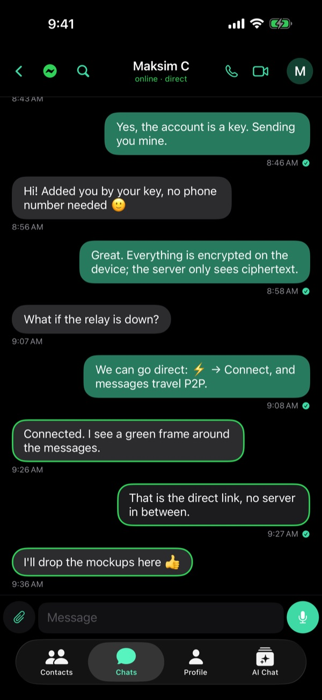

Message marks
Clock, check, read, and who keeps your message
Clock, then a check
A clock: your message is on its way, and Viper keeps trying. One check: the relay has accepted it.

When they are offline
The relay keeps it, encrypted, until they come back online. Then it delivers it and deletes its copy. There is no separate mark for delivered.
Read
When they open the chat, their phone tells yours, and the check becomes a filled mark. If they turned Send Read Receipts off, you see no read mark.
Direct and Bluetooth
A direct message shows no mark: it went straight to their phone. Over Bluetooth, the check means their phone got it. If a link drops as you send, the message takes the next route.
Kept on your phone
Your chats are stored on this device, encrypted. The relay deletes each message once it is delivered and keeps no history. A copy of your own: Encrypted Chat Backup in Settings → Security and Data.
Earlier on this blog
From the guide in Viper 1.5.34: Profile → Settings → Help → Guides. All posts